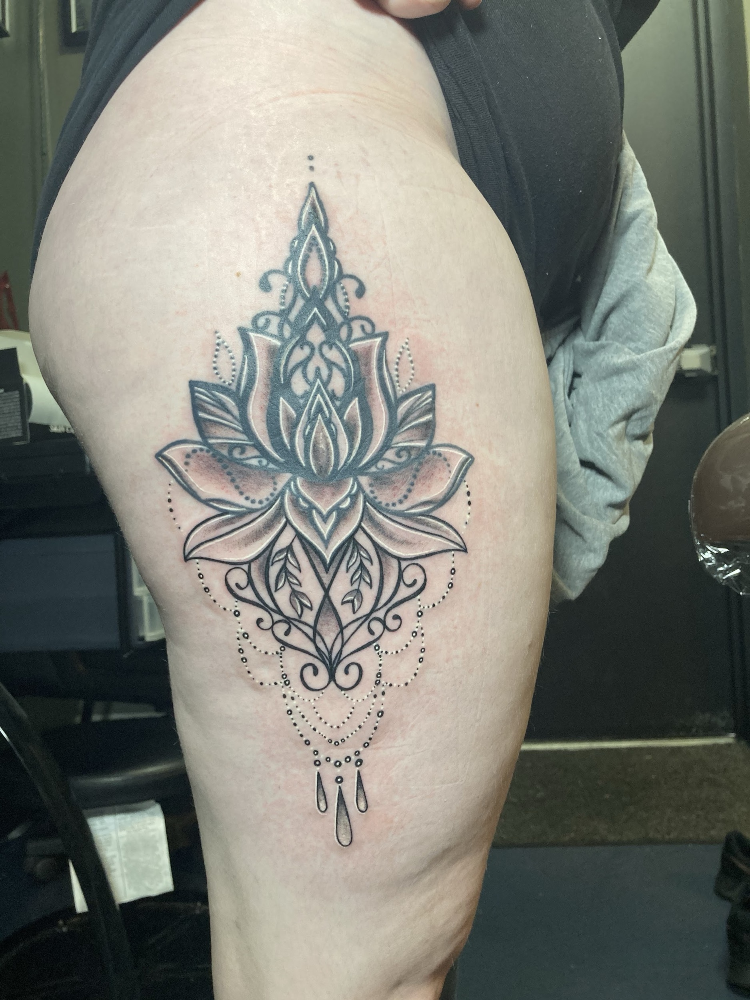

Custom tattooing
A new tattoo.
Bring inspiration, a story or a starting point. Discuss the design, placement, scale and artist fit before making plans.
Explore the studio archive ↗Tattoo & piercing
Choose the conversation you need, then bring the studio your questions about design, placement and the next step.

Custom tattooing
Bring inspiration, a story or a starting point. Discuss the design, placement, scale and artist fit before making plans.
Explore the studio archive ↗Cover-ups & reworking
Talk with the team about an existing tattoo and what you hope to change. What is possible depends on the piece; the artist will discuss options with you.
Ask about your existing tattoo ↗Piercing
Call to discuss piercing services, jewelry, suitability requirements and current availability directly with the studio.
Ask the studio ↗Before you book
The studio can quote after discussing your idea. Ask about the design, size, placement, sessions and any deposit before confirming.
Call first to check whether an artist is available and how the studio would like you to arrange your visit.
Bring your idea, reference images and a sense of placement and scale. Ask the studio about any ID or other requirements.
Your artist or piercer will explain the care instructions for your work. Contact the studio directly for questions about the instructions you received.
Start with what matters to you